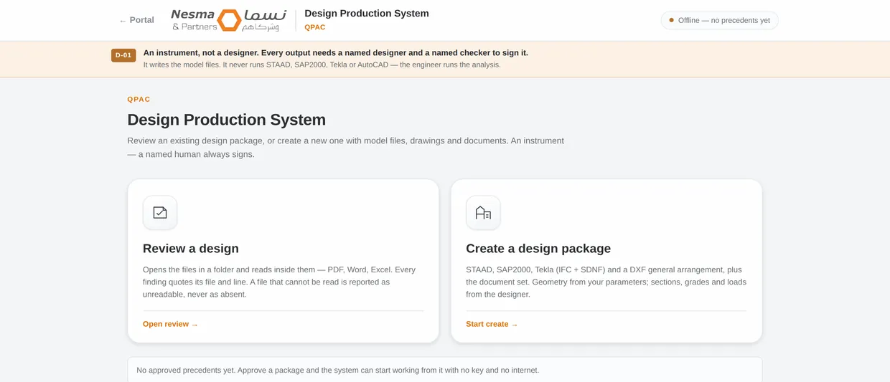
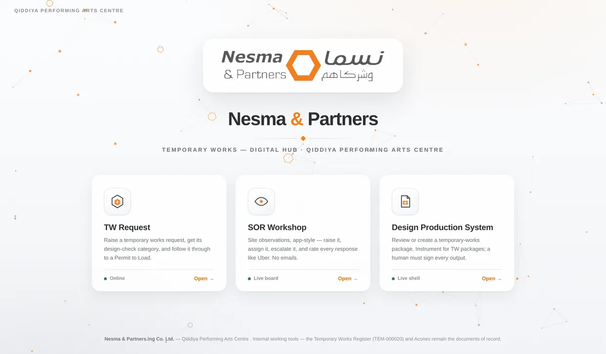

R.01 / Engineering tools in development
Design Production System
An ongoing tool-development project for the repetitive documentation surrounding temporary-works design.
- MY ROLE
- Workflow design · Tool development
- DISCIPLINE
- Engineering documentation
- PERIOD
- 2026
- ISSUE STATUS
- In development

The task
Producing model inputs, drawings, reports, and schedules from the same brief creates a substantial coordination task before and after the engineering analysis.
My contribution
I am developing a tool to assemble model inputs and supporting documents from structured project data, while keeping the engineer responsible for the analysis, checking, and release.
What I delivered
- Structured brief and model-input generation.
- Coordinated drawing and schedule outputs.
- Supporting document templates with open items identified.
The result
The current build is being developed around traceable inputs and clear separation between document generation and the engineer’s analysis and approval.
In development. It does not replace the designer or checker, run or approve the engineering analysis, or sign project documents.
